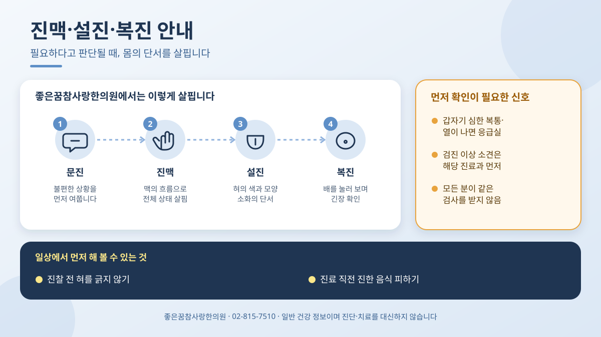
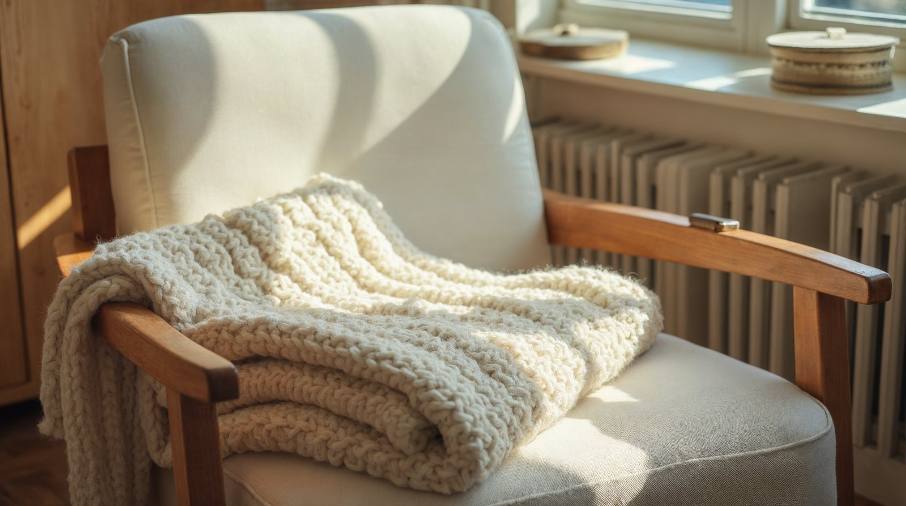
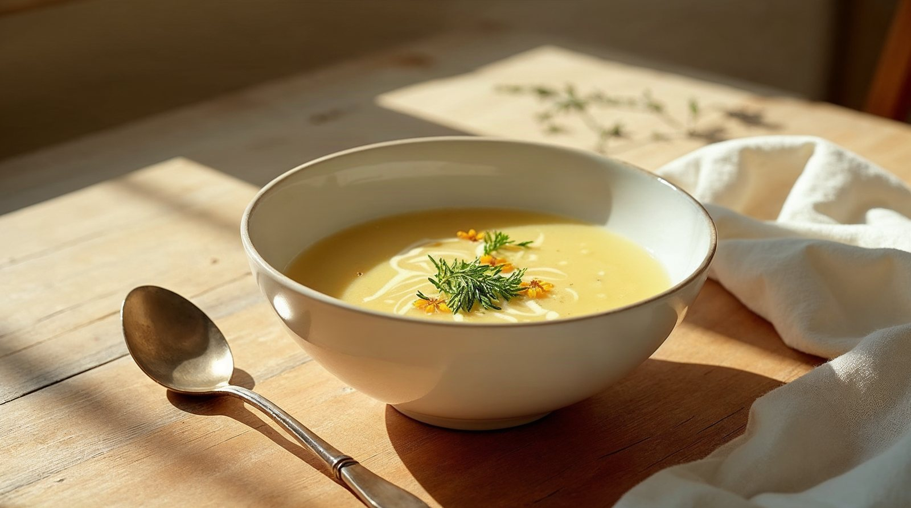
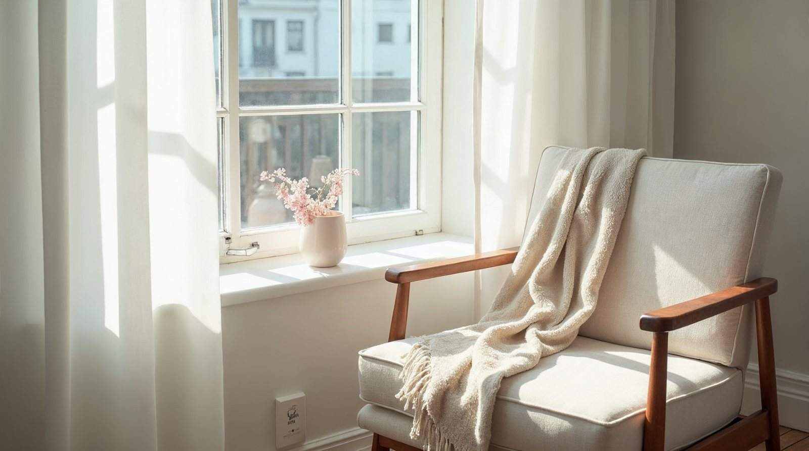
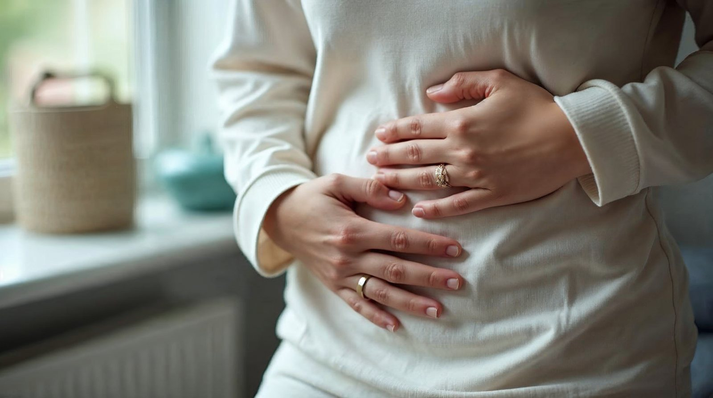
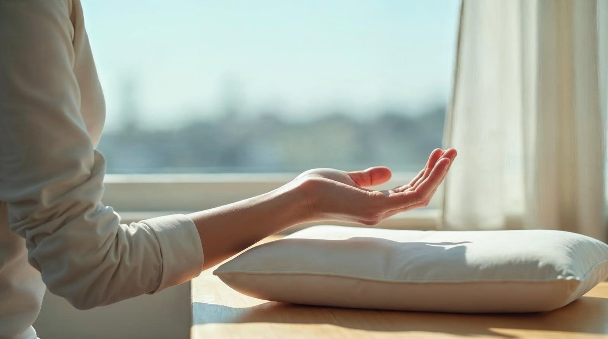
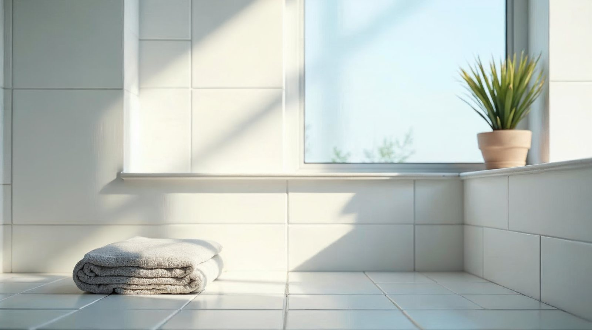
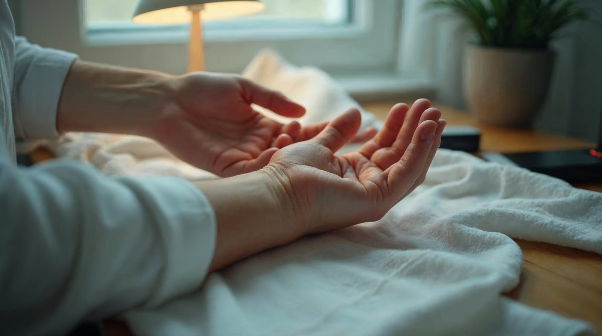
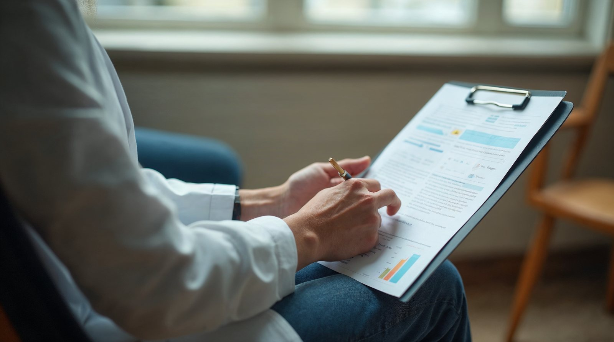

좋은꿈참사랑한의원은 모든 분께 진맥을 합니다. 진맥은 진맥 이야기에서 자세히 안내하며, 설진(혀 보기), 복진, 초음파 같은 다른 진찰은 말씀해 주신 증상에 따라 필요하다고 판단될 때 합니다. 진찰보다 먼저 일상의 말로 충분히 듣고, 몸따삶잘(몸의 온기·소화·잠·대소변·통증과 생활)을 함께 살핍니다.

진찰, 쉬운 말로 하면
한의원의 진찰은 불편한 곳 하나만이 아니라 몸 전체의 상태를 살피는 과정입니다. 같은 두통이라도 잠, 소화, 몸의 온기에 따라 살필 점이 달라질 수 있어 이야기를 먼저 듣고 필요한 진찰을 고릅니다.
진찰을 시작하기 전에는 무엇을, 왜 하는지 먼저 설명하고 진행합니다.
이런 방법으로 살핍니다
각각의 방법은 하나만으로 판단하지 않고, 말씀해 주신 이야기와 함께 모아서 참고합니다.
- 진맥: 모든 분께 합니다. 몸의 전체적인 기운과 상태를 살피며, 지난 진료의 맥과도 비교합니다
- 설진(혀 보기): 소화, 열감 등 몸속 상태의 단서를 살필 때
- 복진: 배를 눌러 긴장과 불편한 곳을 살필 때
- 초음파: 아픈 부위의 조직 상태를 눈으로 확인할 필요가 있을 때
- 사상체질: 체형과 생활의 경향을 참고할 때
숫자로 확인할 때 쓰는 장비
아래 장비는 진찰 후 필요하다고 판단될 때만 사용하며, 결과에 따라 다른 의료기관 진료를 안내해 드릴 수 있습니다. 건강검진 결과지를 가져오시면 함께 비교해 볼 수 있습니다.
체성분이나 혈액 관련 수치는 한 번의 숫자보다 시간에 따라 어떻게 바뀌는지를 함께 봅니다. 진단과 약 처방이 필요한 수치는 내과 등 해당 진료과 확인을 먼저 권합니다.
- 인바디 770: 체수분·근육량·체지방 등 체성분 측정
- 당화혈색소(HbA1c) 검사기
- 혈액 검사기(마인드레이, PT10)
진찰 전에 먼저 여쭙는 것
이야기를 먼저 들은 뒤에 필요한 진찰을 고르기 때문에, 불편한 점을 일상의 말로 편하게 말씀해 주시면 됩니다.
- 언제부터, 어떤 상황에서 불편한지
- 잠, 소화, 대소변, 손발과 배의 온기
- 땀이 나는 모양과 추위·더위를 타는 정도
- 복용 중인 약과 건강검진 결과
- 최근 달라진 생활(이사, 이직, 시험 준비 등)
진찰 날 이렇게 준비해 주세요
- 혀를 보는 날은 진찰 직전 커피나 색이 진한 음료, 사탕을 피하기
- 급하게 걸어왔다면 잠시 앉아 숨을 고른 뒤 맥을 보기
- 배를 살필 수 있도록 편한 옷 입기
- 건강검진 결과지와 복용 약 목록 챙기기
먼저 다른 진료가 필요한 경우
아래와 같은 경우는 해당 진료과나 응급실 진료가 먼저이며, 한의원 진찰이 병원 검사를 대신하지 않습니다.
- 갑자기 생긴 심한 통증, 가슴 통증, 숨참
- 검사 결과에서 바로 치료가 필요하다는 안내를 받은 경우
- 원인 모를 체중 감소, 혈변, 이어지는 고열
좋은꿈참사랑한의원 진찰은 이렇게 진행됩니다
상담에서 이야기를 먼저 충분히 듣고, 모든 분께 진맥을 합니다. 그 밖의 진찰과 검사는 필요하다고 판단될 때만 하므로 모든 분이 같은 검사를 받지는 않습니다. 진찰에서 살핀 내용은 다음 진료에서 이어서 확인합니다.
진찰 결과는 이렇게 이어집니다
진찰에서 살핀 내용은 그날의 치료 방법을 정하는 데 참고하고, 귀가 전 안내에서 집에서 지켜볼 점을 알려 드립니다. 다음 진료에서는 지난번 진찰 내용과 그 사이 일상에서 달라진 점을 함께 비교합니다.
진찰이나 검사에서 다른 의료기관 확인이 필요한 부분이 보이면 그 내용을 먼저 안내합니다. 궁금한 점은 진찰 중에도 편하게 물어 주세요.
- 혀나 맥, 배를 살필 때 불편하면 바로 말씀하기
- 검사를 원하지 않으면 미리 알려 주기
- 결과지가 필요하면 진료 때 요청하기
상도동·노량진에서
좋은꿈참사랑한의원은 상도역 3번 출구에서 약 200m, 서울 동작구 만양로2길 2 신성빌딩 3층·5층 (상도동)에 있습니다. 상담과 진찰을 함께 진행하므로 처음 오실 때는 시간 여유를 두고 예약해 주세요. 평일은 오후 8시까지, 토·일·공휴일은 오후 3시까지 진료합니다.
자주 묻는 질문
좋은꿈참사랑한의원에서는 모두 진맥을 하나요?
네. 처음 오신 분, 다시 오신 분, 통증으로 오신 분 모두 진맥을 합니다. 설진, 복진, 초음파 같은 다른 진찰은 말씀해 주신 증상에 따라 필요하다고 판단될 때 합니다.
혀를 보는 건 무엇을 알기 위해서인가요?
혀의 색과 모양, 표면의 상태를 보며 소화와 열감 등 몸속 상태의 단서를 참고합니다. 진찰 직전에는 커피나 색이 진한 음식을 피해 주세요.
맥을 보기 전에 쉬어야 하나요?
급하게 걸어오셨다면 대기실에서 잠시 앉아 숨을 고른 뒤 맥을 봅니다.
배를 왜 눌러 보나요?
배의 긴장과 불편한 곳, 소화 상태를 살피기 위해서입니다. 누를 때 아프면 바로 말씀해 주세요.
한의원에서 초음파도 하나요?
네. 아픈 부위의 조직 상태를 눈으로 확인할 필요가 있다고 판단될 때 초음파로 살핍니다.
인바디는 누구나 받나요?
아니요. 체중이나 대사 상담처럼 체성분 확인이 필요하다고 판단될 때 진행합니다.
건강검진 결과지를 가져가면 좋은가요?
네. 결과지를 가져오시면 지금 상태와 비교해 볼 수 있고, 다른 의료기관 확인이 필요한 항목이 있으면 안내합니다.
사상체질은 어떻게 알 수 있나요?
체형과 성격, 소화와 땀, 잠 같은 생활의 경향을 함께 살펴 참고합니다. 체질만으로 모든 것을 정하지는 않습니다.
감수: 좋은꿈참사랑한의원 대표원장 이종호 · 마지막 확인 2026-11-26 · 일반적인 건강 정보이며 진단·치료를 대신하지 않습니다.
진단 방법(설진·맥진·복진) 글 모아 보기 (20편)

오후만 되면 달아오르는 몸에 음허·허열이라는 말을 들었을 때, 어떤 뜻이고 무엇을 살피나요?
음허·허열은 몸을 식히고 적시는 쪽이 모자라 오후나 밤에 달아오르는 모습을 한의학에서 전통적으로 부르는 말입니다. 병명이 아닌 진찰의 설명으로서 뜻과 진맥·설진·문진, 생활에서 살필 점을 정리했습니다.
수정 2026-11-26

몸이 늘 차다고 했더니 양허라는 말을 들었을 때, 어떤 뜻이고 생활에서는 무엇을 살피나요?
양허는 몸을 데우고 움직이는 힘이 모자라 추위를 많이 타는 모습을 한의학에서 전통적으로 부르는 말입니다. 병명이 아닌 진찰의 설명으로서 뜻, 진맥·설진·문진과의 관계, 수족냉증·갑상선과의 구분, 생활 습관을 정리했습니다.
수정 2026-11-26

얼굴은 달아오르는데 발은 찬 몸에 상열하한이라는 말을 들었을 때, 어떤 뜻이고 무엇을 살피나요?
상열하한은 위로는 열이 오르고 아래는 찬 모습을 한의학에서 전통적으로 부르는 말입니다. 병명이 아닌 진찰의 설명으로서 뜻, 진맥·설진·문진과의 관계, 혈압·갱년기와의 구분, 생활 습관을 정리했습니다.
수정 2026-11-26

내 체질이 궁금할 때, 사상체질은 진료실에서 어떻게 참고하고 어디까지 믿으면 되나요?
태양인·태음인·소양인·소음인으로 나누는 사상체질은 몸과 마음의 경향을 이해하는 한 가지 틀입니다. 진료실에서 체질을 어떻게 살피고 참고하는지, 인터넷 체질 검사와 음식 목록을 볼 때 알아 둘 점을 정리했습니다.
수정 2026-11-26

진료실에서 기허라는 말을 들었을 때, 어떤 뜻이고 생활에서는 무엇을 살피나요?
기허는 기운이 모자라 쉽게 지치는 몸의 모습을 한의학에서 전통적으로 부르는 말입니다. 병명이 아니라 진찰에서 쓰는 설명이라는 점, 진맥·설진·문진과의 관계, 생활에서 함께 살필 것을 정리했습니다.
수정 2026-11-26

몸이 무겁고 붓는다고 했더니 담음이라는 말을 들었을 때, 어떤 뜻이고 무엇을 살피나요?
담음은 몸의 물기가 잘 돌지 못하고 끈적하게 머문 모습을 한의학에서 전통적으로 부르는 말로, 흔히 말하는 '담 걸렸다'와는 다릅니다. 진맥·설진·문진과의 관계, 생활 속 모습, 식사와 움직임 습관을 정리했습니다.
수정 2026-11-26

스트레스로 가슴이 답답하다고 했더니 간기울결이라는 말을 들었을 때, 어떤 뜻이고 무엇을 살피나요?
간기울결은 긴장과 스트레스로 기운의 흐름이 막혀 답답한 모습을 한의학에서 전통적으로 부르는 말로, 간 수치가 나쁘다는 뜻이 아닙니다. 진맥·설진·문진과의 관계, 생활 속 모습, 마음과 몸을 함께 돌보는 습관을 정리했습니다.
수정 2026-11-26

진료실에서 어혈이 있다는 말을 들었을 때, 피가 뭉쳤다는 건 어떤 뜻이고 무엇을 살피나요?
어혈은 피의 흐름이 느려져 한곳에 머문 모습을 한의학에서 전통적으로 부르는 말로, 혈전과 같은 진단명이 아닙니다. 진맥·설진·문진에서 무엇을 보는지, 생활에서 흔한 모습과 구분할 것, 챙길 습관을 정리했습니다.
수정 2026-11-26

진료실에서 혈허라는 말을 들었을 때, 빈혈과는 어떻게 다르고 생활에서는 무엇을 살피나요?
혈허는 몸을 적시고 기르는 힘이 모자란 모습을 한의학에서 전통적으로 부르는 말로, 빈혈 진단과 같은 말이 아닙니다. 진맥·설진·문진에서 무엇을 보는지, 흔한 생활 속 모습과 챙길 습관을 정리했습니다.
수정 2026-11-26

어르신이 처음 진맥을 받으실 때 무엇을 보고 어떤 것을 여쭙나요?
어르신이 처음 오셔도 모든 분께 그렇듯 양쪽 손목의 맥부터 짚으며, 드시는 약과 지병, 잠·식사·대소변 같은 생활 모습을 함께 여쭙습니다. 진맥은 아프지 않고, 맥 하나로 결론을 내리지 않습니다.
수정 2026-11-24

설진은 혀의 어떤 점을 살피나요?
설진은 혀의 색, 크기와 모양, 설태, 갈라짐과 이 자국, 촉촉한 정도를 살펴 몸 상태를 가늠하는 한의학의 진찰로, 혀 하나로 단정하지 않고 맥진·문진·복진과 잠·소화 같은 생활 리듬, 이미 받은 검사 결과와 함께 참고합니다.
수정 2026-11-26

사상체질은 무엇이고 어떻게 알아보나요?
사상체질은 사람을 태양인, 태음인, 소양인, 소음인으로 나누어 몸의 경향을 살피는 한의학의 방법으로, 한 번의 설문으로 단정하지 않고 맥진과 체형, 소화, 땀, 잠, 성향, 병력을 함께 보며 참고 자료로 활용합니다.
수정 2026-11-26

맥진은 어떻게 하고 손목에서 무엇을 살피나요?
맥진은 손목의 맥을 세 손가락으로 짚어 빠르기, 세기, 깊이, 리듬을 살피는 진찰로, 오시는 모든 분의 맥을 짚되 맥 하나로 단정하지 않고 잠·소화·대소변·체온·마음 같은 몸 전체의 리듬과 함께 보며, 부정맥이 의심되면 심전도 같은 검사를 권합니다.
수정 2026-11-26

허리가 아파서 왔는데 대변과 소변은 왜 묻나요?
허리 통증으로 오셨어도 대변과 소변을 묻는 것은 몸 전체의 리듬을 함께 보기 위해서이고, 대소변 조절이 어려워진 허리 통증처럼 바로 확인이 필요한 위험 신호를 놓치지 않기 위해서이기도 합니다.
수정 2026-11-26

설진 전에 커피나 사탕을 먹으면 혀 색이 달라지나요?
커피, 사탕, 색이 진한 음료는 혀 색과 설태를 잠시 바꿀 수 있어, 설진이 있는 날은 방문 30분 전부터 피하시고 드신 것이 있으면 진찰 때 그대로 알려 주시길 권합니다.
수정 2026-11-26

땀이 많거나 적다고 하면 진료실에서 무엇을 묻나요?
땀이 많거나 적다고 하시면 땀이 나는 시간, 부위, 상황과 함께 잠, 열감, 긴장을 묻고, 밤에 흠뻑 젖는 땀이 이어지거나 열·체중 감소가 있으면 다른 의료기관 확인을 먼저 안내합니다.
수정 2026-11-26

뛰어서 도착했는데 바로 진맥을 해도 괜찮나요?
계단을 오르거나 서둘러 걸어온 직후에는 맥이 잠시 빨라질 수 있어, 진맥 전에 먼저 앉아 숨을 고르시도록 하고 그날 드신 커피나 긴장 정도도 함께 고려합니다.
수정 2026-11-26
손발이 차다고 하면 진료실에서 어떤 것을 함께 묻나요?
손발이 차다고 하시면 언제 어디가 차가운지와 함께 잠, 소화, 생리 주기, 긴장 정도를 묻고, 손가락 색이 변하거나 피로·체중 변화가 함께 있으면 다른 원인 확인을 먼저 안내합니다.
수정 2026-11-26

건강검진 결과지를 한의원에 가져가면 어떻게 참고하나요?
건강검진 결과지는 혈압, 혈당, 간 수치처럼 지금 몸 상태를 이해하는 데 도움이 되는 자료라 진맥·설진·복진과 함께 참고하며, 재검이나 진료가 필요한 항목은 해당 의료기관 진료를 먼저 권합니다.
수정 2026-11-26

복진은 무엇이고 한의원에서 배를 만져 보는 이유는 무엇인가요?
복진은 누운 자세에서 배의 긴장도, 눌렀을 때의 반응, 차고 따뜻한 정도를 손으로 확인해 소화와 몸 상태를 살피는 진찰로, 맥진과 잠·소화·대소변 이야기와 함께 참고하며, 갑자기 시작된 심한 복통은 한의원보다 가까운 응급실을 먼저 권합니다.
수정 2026-11-26